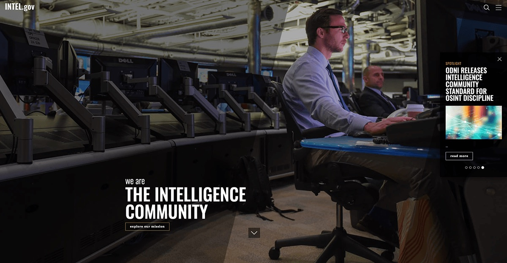
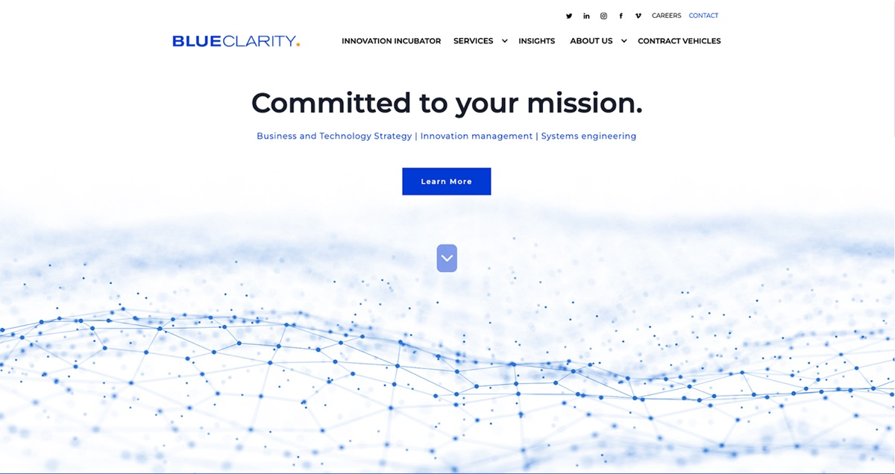
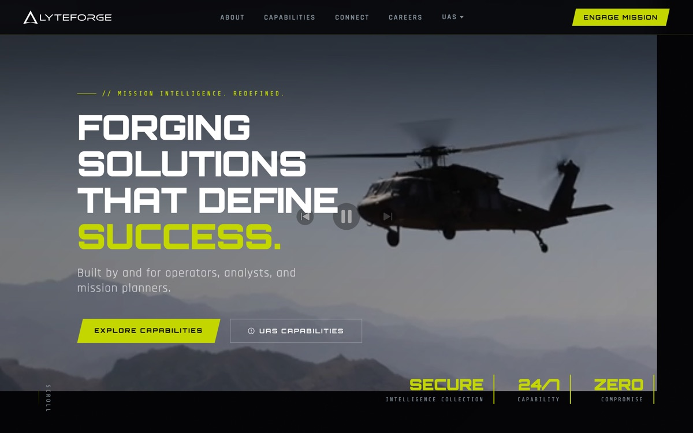
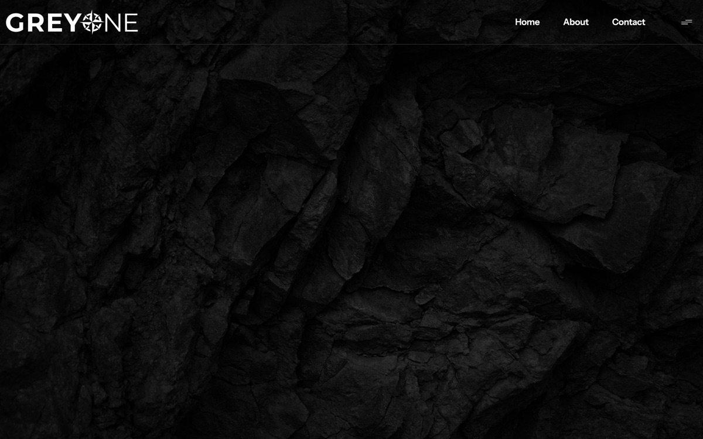
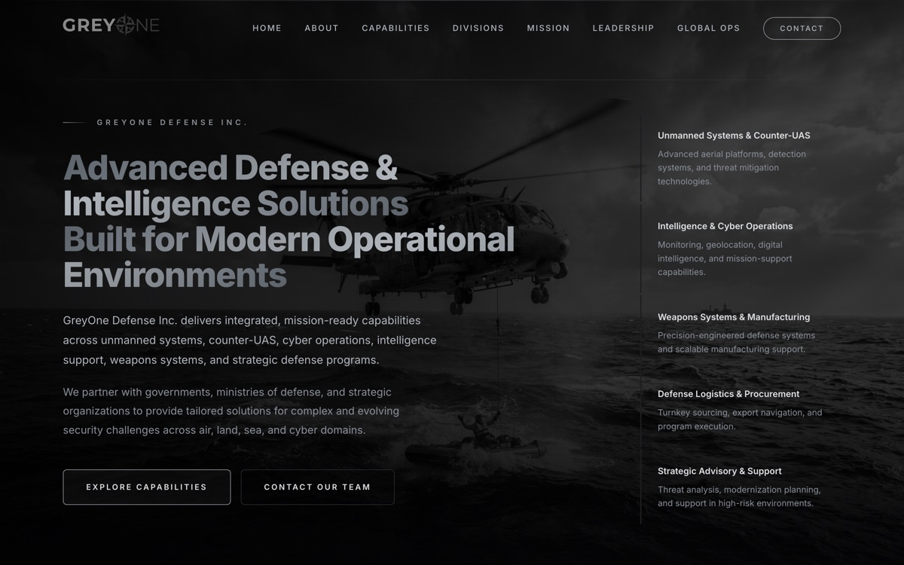
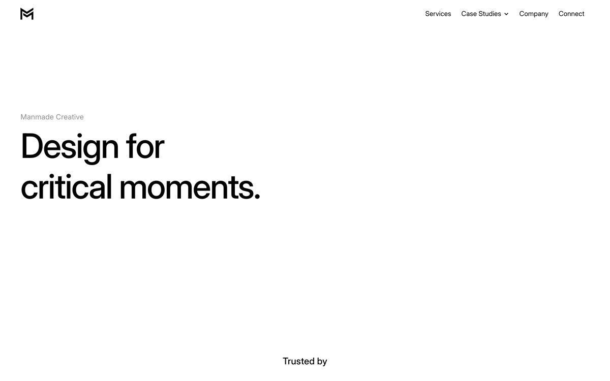
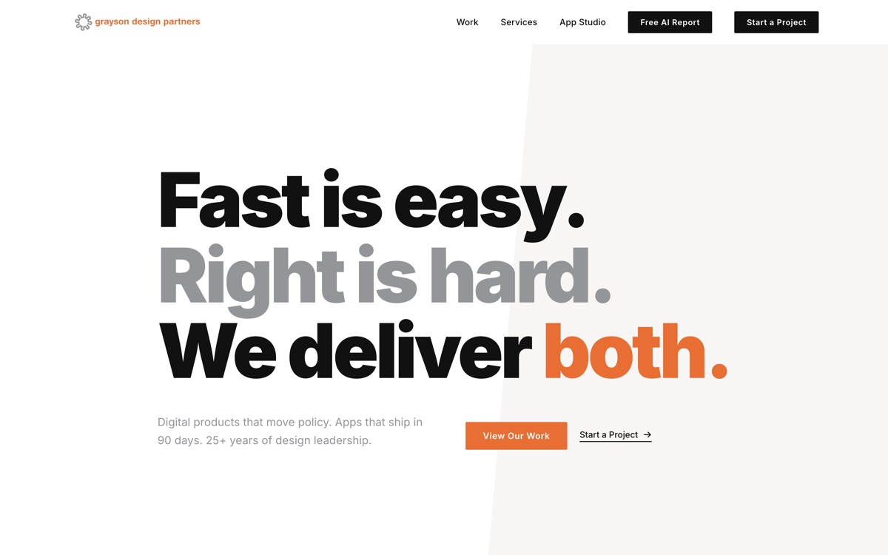

Selected work
Websites and products built for defense and intelligence organizations, federal agencies, and technology studios. Each one links to the live site.
-

Intelligence.gov
As the UX Architect and 1 of 2 UX Leads for the Intelligence Community’s official website, intelligence.gov, I led a comprehensive design strategy to enhance public engagement and transparency. We ensured accessibility, mobile responsiveness, and a consistent user experience across federal platforms.
The site’s design emphasizes the human aspect of intelligence work, featuring narratives and imagery that portray IC professionals as everyday individuals dedicated to national security. This approach fosters trust and relatability, aligning with the site’s mission to demystify intelligence operations. The intuitive navigation and clear content structure provide users with seamless access to information about the IC’s mission, career opportunities, and declassified materials.
Visit intelligence.gov -

Blue Clarity
As the designer and builder of Blue Clarity’s website, I utilized the Webflow platform to create a digital presence that reflects the company’s dedication to customer experience and IT strategy. The site highlights Blue Clarity’s services, including Customer Experience Management, Data and Analytics, Co-Innovation, Digital Engineering and Architecture, and their Innovation Incubator.
The design emphasizes clarity and user engagement, aligning with Blue Clarity’s mission to blend strategy and analytics with customer insights, design, and creative thinking to help clients discover, implement, and improve their products and services.
Visit blueclarity.io -
ORION
As the UX designer for the Ops Response Interagency Operations Network (ORION) project, I led the development of a common operating picture application for the U.S. Department of State’s Executive Secretariat Operations Center. ORION aggregates real-time intelligence from diverse internal and public sources, transforming scattered data into coherent situational awareness views. This enables crisis management officers to effectively monitor, anticipate, and respond to conditions at over 200 U.S. posts worldwide.
By focusing on delivering precise information through intuitive data visualizations, the platform enhances information sharing, proactive risk assessment, and crisis response capabilities. This user-centric approach has strengthened cross-agency collaboration and improved operational efficiency. The Deputy Secretary highlighted ORION as a unified technology platform that facilitates information sharing and enhances crisis response.
Internal system. No public link.
-

LyteForge Technologies
Placeholder. LyteForge is a defense technology company building unmanned aerial systems and intelligence tooling for federal, defense and intelligence operations, with mission planning, threat identification and multi-source data fusion aimed at decision superiority. Replace this with your own account of the work.
Visit lyteforge.com -

GreyOne
Placeholder. GreyOne is a global strategic holdings company working across defense and intelligence solutions, mission management platforms, precision engineering, advanced vehicle manufacturing, procurement and distribution, and mining and energy infrastructure. Replace this with your own account of the work.
Visit greyone.io -

GreyOne Defense
Placeholder. GreyOne Defense is a U.S. defense and intelligence firm serving governments and defense ministries, across unmanned systems and counter-UAS, intelligence and cyber operations, weapons systems, defense logistics, strategic advisory and multi-domain integration. Replace this with your own account of the work.
Visit greyonedefense.com -

Manmade Creative
Placeholder. Manmade Creative is a UX-led software firm working with government clients, designing for people who operate under extreme circumstances. Services span UX strategy, system optimization, data visualization and decision support, product design and team augmentation. Replace this with your own account of the work.
Visit manmadecreative.com -

Grayson Design Partners
Placeholder. My own design and technology studio in Washington, DC, delivering digital products, rapid app development, workflow automation, brand and identity work. Replace this with your own account of the studio and this site.
Visit graysondp.com
Want to talk about a project?
The main site has the full picture: capabilities, the Intel Layer case study, and a contact form.